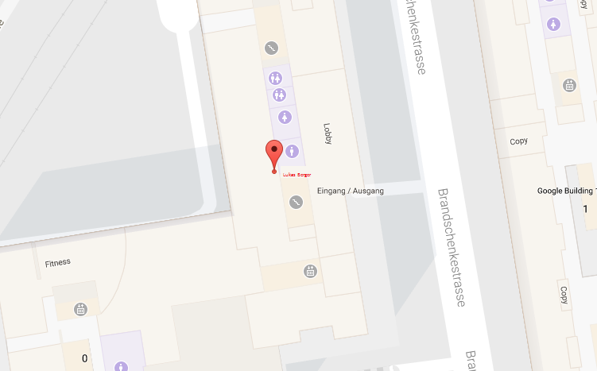

<ion-view title=<script> </script> id="page2">
    <ion-content padding="true" class="has-header">
        <div>
            
        </div>
        <button id="lukasBerger-button1" class="button button-positive  button-block">Anrufen</button>
    </ion-content>
</ion-view>
